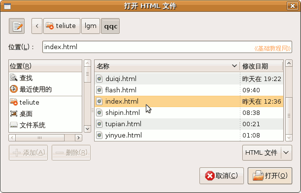
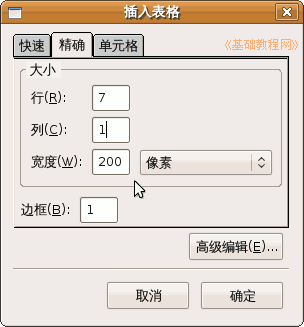
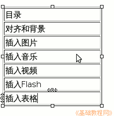
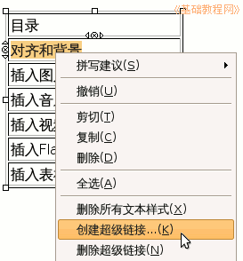
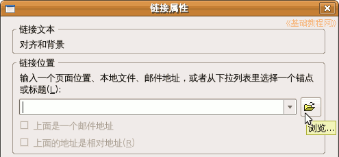
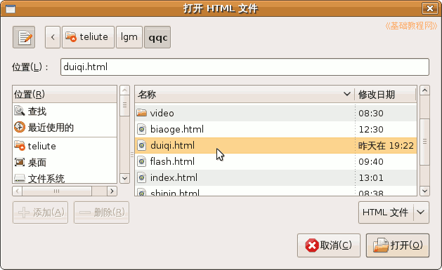
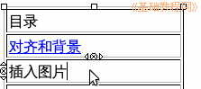
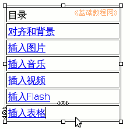

，下面我们通过一个练习来学习；
，下面我们通过一个练习来学习；KompoZer 操作基础教程
作者：Teliute 来源：基础教程网
十、超级链接 返回目录超级链接用来实现网页之间的跳转，超级链接相当于一个标记，点击后就可以进入这个页面；
超级链接一般具有三个特点：蓝色、下划线 和手形标记，下面我们通过一个练习来学习；
1、启动KompoZer
1）点左上角菜单“ 应用程序－编程－KompoZer”，就可以启动KompoZer程序；
2）点菜单“文件－打开文件”命令，打开站点中的index.html文件；

2、创建超链接
1）点菜单“表格－插入－表格”，创建一个7×1的表格，行数为7行；

2）在表格的第一行里输入“目录”，第二行输入“对齐和背景”、第三行输入“插入图片”、第四行输入“插入音乐”、第五行输入“插入视频”、第六行输入“插入Flash”、第七行输入“插入表格”；

3）用拖动鼠标的方法，选中第二行“对齐和背景”，瞄准点右键选“建立超链接”命令；

4）在出来的对话框里点“选取文件”按钮，接着在打开对话框里，选择上次保存的“duiqi.html”文件，然后点打开、确定；
 
这时候文字的颜色变成蓝色，同时下面也有下划线，表示创建了超链接；

5）同样选中其他文字，创建相应的超链接；

6）保存一下文件，点浏览看一下网页，点击各个超链接，看看是否能跳转到相应的页面，看完点“后退”按钮返回；
本节学习了在KompoZer中创建超级链接的基本方法，如果你成功地完成了练习，请继续学习；
本教程由86团学校TeliuTe制作|著作权所有
基础教程网：http://teliute.org/
美丽的校园……
转载和引用本站内容，请保留作者和本站链接。